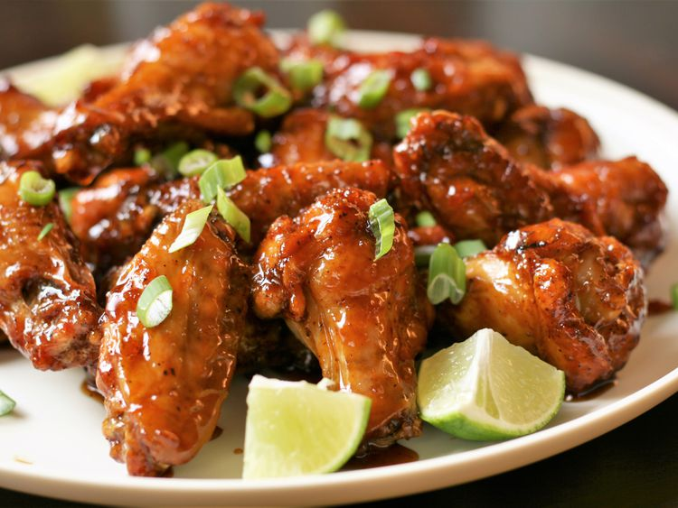

Air Fryer Honey Garlic Chicken Wings

Description
Ingredients
- 1 tablespoon baking powder
- 1 teaspoon salt
- ½ teaspoon black pepper
- ½ teaspoon garlic powder
- ½ teaspoon paprika
- ¼ teaspoon cayenne pepper
- 2 pounds chicken wings
- ½ cup honey
- ¼ cup soy sauce
- 2 cloves garlic, minced
- 1 tablespoon grated fresh ginger root
- 1 tablespoon cornstarch
- 1 tablespoon water
- 2 tablespoons green onions
Steps
- Preheat the air fryer to 400°F (200°C).
- Mix baking powder, salt, black pepper, garlic powder, paprika, and cayenne pepper together in a small bowl.
- Pat chicken wings dry with paper towels, then toss them in spice mixture until evenly coated.
Arrange wings in a single layer in the air fryer basket.
- Cook wings in the preheated air fryer until crispy and golden brown, juices are clear, meat is no longer pink at the bone, 20 to 25 minutes.
An instant-read thermometer inserted near the bone should read 165°F (74°C).
- Meanwhile, make the honey garlic suace.
Stir honey, soy sauce, garlic, and ginger together in a small saucepan over medium heat.
- In a separate small bowl, whisk together cornstarch and water until smooth, then add to the saucepan.
Cook until sauce thickens, 1 to 2 minutes.
- Transfer wings to a large bowl, pour honey garlic sauce over wings, and toss to coat evenly.
Garnish with chopped green onions and serve hot.
Back to Home